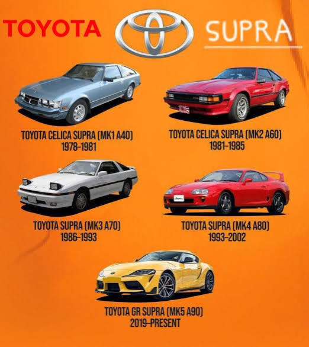
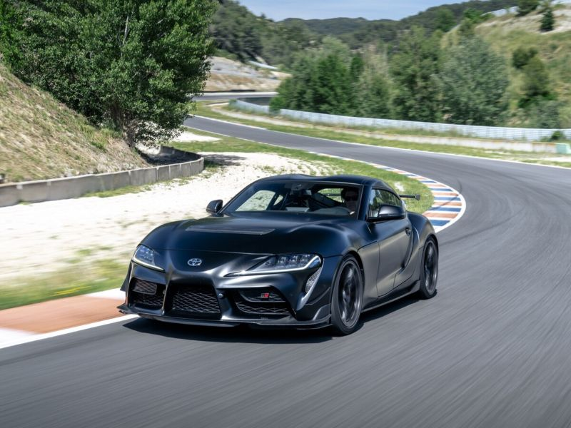

La historia del Toyota Supra
Conoce la evolución del Supra desde sus orígenes hasta la última generación GR Supra.
Leer la historia completa del Toyota SupraTOYOTA SUPRA
Bienvenido a TOYOTA SUPRA, un sitio dedicado a uno de los deportivos japoneses más reconocidos de la historia. Descubre sus generaciones, motores, características y evolución.
Descubrir los contenidos de nuestra web
Conoce la evolución del Supra desde sus orígenes hasta la última generación GR Supra.
Leer la historia completa del Toyota Supra
Compara los motores, potencias y características de diferentes versiones del deportivo japonés.
Consultar la tabla técnica del Supra
Una colección de fotografías, vídeos y audios sobre las distintas generaciones del Supra.
Explorar la galería del Toyota Supra